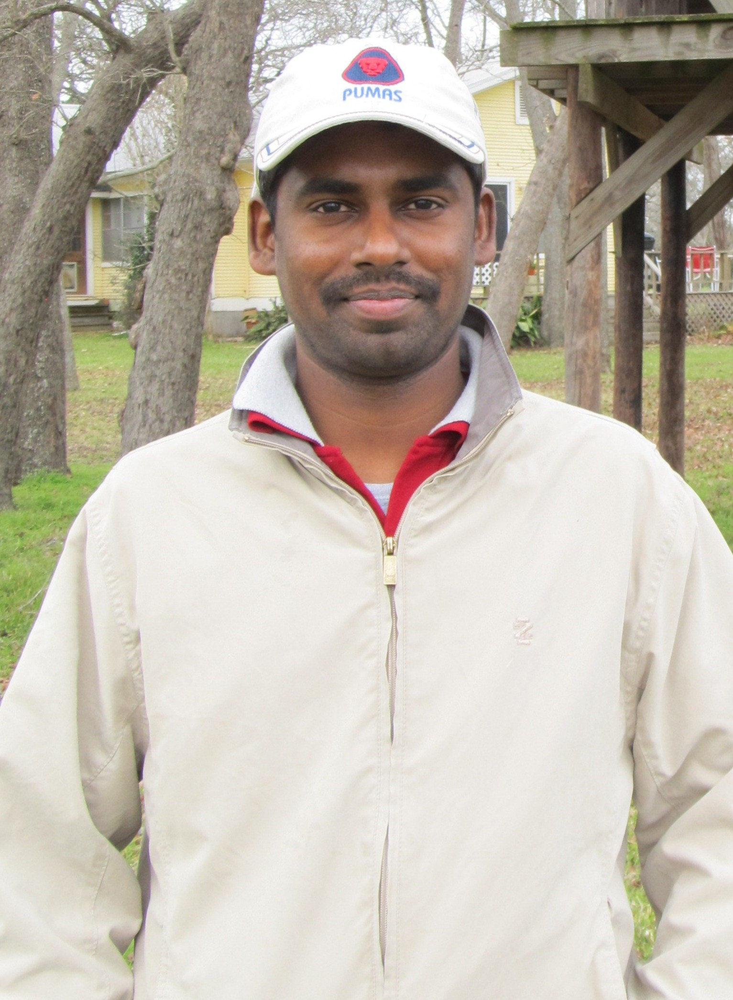

Solution Architecture
Translating business challenges into practical architecture decisions, aligned with performance, usability, and long-term maintainability.
AI Solutions Architect
I am a technology leader focused on designing modern UI systems, enterprise-grade digital platforms, and AI-enabled experiences that bring clarity, speed, and business impact to complex workflows.
14+
Years in software delivery
6+
Years in UI architecture
2
Award recognitions

Core strengths
Translating business challenges into practical architecture decisions, aligned with performance, usability, and long-term maintainability.
Driving user-centered product experiences by connecting design intent, business requirements, and engineering feasibility in one view.
Leading responsive, accessible interfaces with Angular, TypeScript, HTML5, CSS3, and scalable UI engineering patterns for large enterprise workloads.
Guiding delivery teams through architecture reviews, technical decisions, mentoring, and quality-focused collaboration across agile teams.
Featured story
With more than 14 years in software development and a strong track record in UI architecture, I work with product teams to design scalable digital experiences that align with both user needs and enterprise realities. My focus spans front-end modernization, architecture strategy, accessibility, and collaborative delivery in fast-moving agile environments.
Specialization